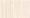
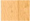

{kind=link}
Описание товара
Готовые композиции
Цвета
Размеры кровати: Ширина 2432мм, Глубина 824мм, Высота 1736мм
Спально место: 200х80см. (матрац приобретается)
Кровать с рабочей зоной Фанки Соло 1 состоит из:
- спальное место, матрац в комплект не входит.
- лестница-комод с 2-мя выдвижными нижними ящиками.
- письменный стол на колесах, столешница вращается.
- узкий пенал для книг и школьных принадлежностей.
- угловой шкаф для одежды с полками и штангой.
Кровать-чердак Фанки Соло 1 - это самостоятельный модуль, который не
a
комбинируется с другой мебелью Фанки Кидз.
{kind=link}
Кровать-чердак Фанки Соло 1
Бук-Желтый
Цена: 16990 руб (При наличии в заказе любого кокосового матраца)23620 руб. (При отсутствии в заказе кокосового матраца)
ЗаказатьКровать-чердак Фанки Соло 1
Венге-Дуб кремона
Цена: 16990 руб (При наличии в заказе любого кокосового матраца)23620 руб. (При отсутствии в заказе кокосового матраца)
ЗаказатьКровать-чердак Фанки Соло 1
Венге-Салатовый
Цена: 16990 руб (При наличии в заказе любого кокосового матраца)23620 руб. (При отсутствии в заказе кокосового матраца)
ЗаказатьВы можете выбрать любой дополнительный модуль для Вашей кровати-чердака: лестницу комод, шкаф двухдверный, шкаф с одной дверью, шкаф угловой, стол письменный, пенал-стеллаж , полку подвесную, комод, подставку под ТВ.
Подробности уточняйте у нашего специалиста.
При оформлении заказа Вы можете выбрать цвет фасада и
цвет корпуса из данных вариантов
Цвет корпуса:
 Дуб Кремона Бук
Венге
Цвет фасада:
Дуб Кремона{kind=link}
{kind=link}
{kind=link}
{kind=link}
{kind=link}
{kind=link}
{kind=link}
{kind=link}
{kind=link}
{kind=link}
{kind=link}
{kind=link}